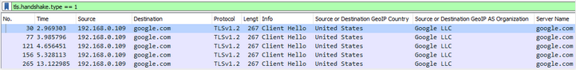

Bypass DoH detection with Domain Fronting
Problem is that a technique called Domain Fronting [https://en.wikipedia.org/wiki/Domain_fronting] also exists, which can be used to i.a. bypass Internet censorship, but also in malicious communication:
$ curl -H 'Host: dns.google.com' 'https://google.com/resolve?name=example.com&type=TXT'
{"Status": 0,"TC": false,"RD": true,"RA": true,"AD": true,"CD": false,"Question":[ {"name": "example.com.","type": 16}],"Answer":[ {"name": "example.com.","type": 16,"TTL": 20794,"data": "\"v=spf1 -all\""}]}
In Wireshark such traffic will look like:

This can look like a normal Internet traffic as someone is querying Google with a web browser. It may look like it's normal but does not have to be if we will focus on the details, how real communication from a web browser looks like. We can count handshakes, size, time between requests, sequences with other hosts like consent.google.com, www.gstatic.com, adservice.google.com etc. Please note that a malicious actor can also do more advanced simulation of a normal user behaviour. This can become a neverending story, as threat actors can use regular user behaviour simulation to transfer even more data as domain fronting can be used probably for all possible Google hosts:
$ host -t A google.com
google.com has address 172.217.16.46
$ host -t A dns.google.com
dns.google.com has address 216.58.215.78
$ curl -H 'Host: dns.google.com' 'https://google.com/resolve?name=example.com&type=TXT'
{"Status": 0,"TC": false,"RD": true,"RA": true,"AD": true,"CD": false,"Question":[ {"name": "example.com.","type": 16}],"Answer":[ {"name": "example.com.","type": 16,"TTL": 8436,"data": "\"v=spf1 -all\""}]}
$ curl -k -H 'Host: dns.google.com' 'https://172.217.16.46/resolve?name=example.com&type=TXT'
{"Status": 0,"TC": false,"RD": true,"RA": true,"AD": true,"CD": false,"Question":[ {"name": "example.com.","type": 16}],"Answer":[ {"name": "example.com.","type": 16,"TTL": 8369,"data": "\"v=spf1 -all\""}]}
$ curl -k -H 'Host: dns.google.com' 'https://216.58.215.78/resolve?name=example.com&type=TXT'
{"Status": 0,"TC": false,"RD": true,"RA": true,"AD": true,"CD": false,"Question":[ {"name": "example.com.","type": 16}],"Answer":[ {"name": "example.com.","type": 16,"TTL": 8361,"data": "\"v=spf1 -all\""}]}
$ host -t A adservice.google.com
adservice.google.com is an alias for pagead46.l.doubleclick.net.
pagead46.l.doubleclick.net has address 172.217.20.194
$ curl -k -H 'Host: dns.google.com' 'https://172.217.20.194/resolve?name=example.com&type=TXT'
{"Status": 0,"TC": false,"RD": true,"RA": true,"AD": false,"CD": false,"Question":[ {"name": "example.com.","type": 16}],"Answer":[ {"name": "example.com.","type": 16,"TTL": 10967,"data": "\"v=spf1 -all\""}]}
$ host -t A google.pl
google.pl has address 172.217.16.35
$ curl -k -H 'Host: dns.google.com' 'https://172.217.16.35/resolve?name=example.com&type=TXT'
{"Status": 0,"TC": false,"RD": true,"RA": true,"AD": false,"CD": false,"Question":[ {"name": "example.com.","type": 16}],"Answer":[ {"name": "example.com.","type": 16,"TTL": 21019,"data": "\"v=spf1 -all\""}]}
$ host -t A blogger.com
blogger.com has address 172.217.20.201
$ curl -k -H 'Host: dns.google.com' 'https://172.217.20.201/resolve?name=example.com&type=TXT'
{"Status": 0,"TC": false,"RD": true,"RA": true,"AD": false,"CD": false,"Question":[ {"name": "example.com.","type": 16}],"Answer":[ {"name": "example.com.","type": 16,"TTL": 21554,"data": "\"v=spf1 -all\""}]}
Full PoC (Proof of Concept) with domain fronting:
$ curl -H 'Host: dns.google.com' 'https://blogger.com/resolve?name=redteam.pl&type=A'
{"Status": 0,"TC": false,"RD": true,"RA": true,"AD": false,"CD": false,"Question":[ {"name": "redteam.pl.","type": 1}],"Answer":[ {"name": "redteam.pl.","type": 1,"TTL": 8615,"data": "104.248.133.95"}]}

Another problem with distinguishing normal traffic from a malicious one is that for example Firefox allows users to use DoH [https://wiki.mozilla.org/Trusted_Recursive_Resolver], which is by default communicating with mozilla.cloudflare-dns.com. At this moment there are a few more DoH services [https://github.com/curl/curl/wiki/DNS-over-HTTPS] and in the future we should have a lot more available.